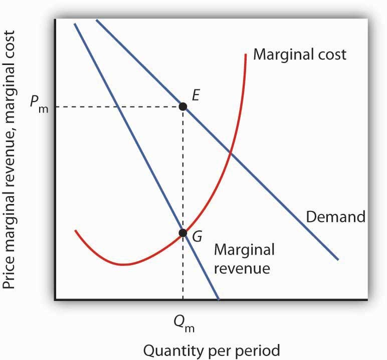
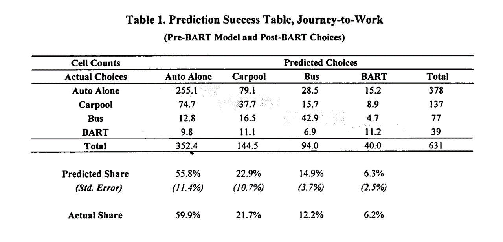

Demand Modeling
UCSD MGT 100 Week 04
Let’s reflect

Demand Curves
- Theory
- Challenges
- What firms do
Inverse Demand Curve

Demand Curves: Theory
Useful theoretical concept that summarizes market response to price
- Why is it useful?Often taught with perfect competition
- Typically assumes stable, competitive, frictionless markets w free entry, full information, no differentiation - Model predicts zero LR economic profits - Any evidence?Also, taught with monopoly i.e. market power
- What is market power? How would we measure it?
Demand Curves: Challenges
Idealized demand curves are hard to estimate (why?)
Where do product attributes come in?
Many things can predict demand
- preferences, information, advertising, quality, match value, costs, complements, substitutes, competitor prices, entry, policy, taxes, retail distribution, nature of equilibrium, stockpiling, other consumer behaviors...What do we need to estimate Demand?
How firms learn demand
Market research
- Typically, conjoint analysis or simulated purchase environmentsExpert judgments, e.g. salesforce input
Cost-driven price adjustments
Demand modeling with archival data
Price experiments
- Typically, market tests, digital experiments, bandits, coupons or other targeted price promotionsBest practice: triangulation
Price Experiments
Ideally, the best way to learn demand, but…
Competitors & consumers can observe price variation
May change purchase timing, stockpiling or reference prices
Competitors, distribution partners or suppliers may react
Hence, experimenting to learn demand may change future demand
Demand Modeling: Pros
Relatively inexpensive for large organizations
Confidential
Depends on real consumer choices, i.e. revealed preferences
Demand Modeling: Cons
Requires data, exogenous price variation, time, effort, training, trust, organizational buy-in
Subject to untestable modeling assumptions
Requires the future to resemble the past
- To be fair, most analytic techniques require these 3
Do Demand Models Work?
Evidence is scarce but supportive
- Informally, I know several people who maintain demand models in large orgs - Formal evidence requires researchers and firm to collaboratively (a) estimate demand, (b) act on demand estimates, (c) observe how actions affect outcomes, & (d) report the results. Hard to do & incentives conflict - Demand modeling can also go badly, e.g. due to price endogeneityMisra & Nair (2011) : B2B sales & salesforce compensation
Nair et al. (2017) : Casino loyalty rewards
Pathak and Shi (2021) : School choice
Dube and Misra (2023) : Ziprecruiter ad pricing
Multinomial Logit
- history, math, discussion
Multinomial Logit (MNL)
- Old, famous, popular demand model
- Ported to econ from stats & psych by McFadden (1974, 1978, 1981; “Logistic regression’’)

Multinomial Logit (MNL)
Let \(i\) index consumers, \(j=1,...,J\) products, and \(t\) index choice occasions
Assume each \(i\) gets indirect utility \(u_{ijt}\) from product \(j\) in market \(t\):
\[u_{ijt}=x_{jt}\beta-\alpha p_{jt}+\epsilon_{ijt}\]
- Then, assuming each \(i\) picks the \(j\) that maximizes \(u_{ijt}\), has unit demand, and that \(\epsilon_{ijt}\sim\)i.i.d.\(EV_1(0,1)\), market share is
\[Prob.\{u_{ijt}>u_{ikt}\forall{k\ne j}\}\equiv s_{jt}=\frac{e^{x_{jt}\beta-\alpha p_{jt}}}{\sum_{k=1}^J e^{x_{kt}\beta-\alpha p_{kt}}}\]
With \(N_t\) consumers, \(q_{jt}(\vec{p})=N_t s_{jt}\). See Train 2009 sec 3.10 for proof
- Estimating \(\alpha\) and \(\beta\) enables us to predict every product’s quantity response to a change in any product’s attributes \(x_{jt}\) or price \(p_{jt}\)
MNL: Common factors
- Suppose \(\gamma_{t}\) indicates how popular the category is in market \(t\), so utility is \(u_{ijt}=\gamma_{t}+x_{jt}\beta-\alpha p_{jt}+\epsilon_{ijt}\). Then market share becomes
\[s_{jt}=\frac{e^{\gamma_{t}+x_{jt}\beta-\alpha p_{jt}}}{\sum_{k=1}^J e^{\gamma_{t}+x_{kt}\beta-\alpha p_{kt}}}\]
\[s_{jt}=\frac{e^{\gamma_{t}} e^{x_{jt}\beta-\alpha p_{jt}}}{e^{\gamma_{t}}\sum_{k=1}^J e^{x_{kt}\beta-\alpha p_{kt}}}\]
\[s_{jt}=\frac{e^{x_{jt}\beta-\alpha p_{jt}}}{\sum_{k=1}^J e^{x_{kt}\beta-\alpha p_{kt}}}\]
- Similar exercise applies to individual-specific intercepts \(\gamma_i\)
MNL: Share differences
- We set product \(j=1\) utility to \(u_{i1t}=\epsilon_{i1t}\) to normalize utility, i.e.
\[s_{1t}=\frac{1}{\sum_{k=1}^J e^{x_{kt}\beta-\alpha p_{kt}}}\]
- Hence for every \(j\ne 1\), consider an affine transformation of market shares:
\[ln(s_{jt})-ln(s_{1t})=x_{jt}\beta-\alpha p_{jt}\]
- Looks like a regression equation… we sometimes add an error \(\xi_{jt}\) to represent unobserved product attributes:
\[ln(s_{jt})-ln(s_{1t})=x_{jt}\beta-\alpha p_{jt}+\xi_{jt}\]
- It’s the \((J-1)T\) differences in market shares that identify demand parameters
MNL Estimation
Define \(y_{ijt} \equiv 1\{i \text{ chose } j \text{ in } t\}\). I.e., \(y_{ijt}=1\) iff \(i\) choose \(j\) at \(t\); otherwise \(y_{ijt}=0\).
- Maximum likelihood: Assume the probability of observation \(\{i,j,t\}\) is \(s_{jt}^{y_{ijt}}\);
then lik. is \(L(\beta )=\prod\limits_{\forall i,j,t} s_{jt}^{y_{ijt}}\); & choose parameters to maximize log lik:
\[\sum_{\forall i,j,t} y_{ijt}\ln s_{jt}\]
- Method of Moments: Choose \(\alpha\) and \(\beta\) to solve some vector of “moments,” i.e. interactions between observables \(z\) and error terms, e.g.
\[ \sum_{\forall j,t}z_{jt} (\frac{\sum_{\forall i}y_{ijt}}{N_t} - s_{jt})=0\]
- Linearize the model and choose parameters to minimize the sum of square errors
MNL Goodness-of-fit Statistics
Discrete choice models predict choice probabilities rather than choices, because utility is always unobserved; hence nonstandard fit statistics
Predicted outcomes are inherently stochastic, so limited predictive ability
- Likelihood Ratio Test: (not R-sq)
\[\rho=1-\frac{ln L(\hat\beta)}{ln L(0)}\]
As \(L(\hat\beta)\to 1\), \(ln L(\hat\beta)\to 0\), \(\rho\to 1\)
As \(ln L(\hat\beta)\to ln L(0)\), \(\rho\to 0\)
- Heuristic: 0.2-0.4 is pretty good
Hit Rate: % of individuals for whom most-probable choice was actually chosen
R-sq using prediction errors at the \(jt\) level
MNL Pros
Microfounded, i.e. behavioral predictions are consistent with a clearly specified theory of consumer choice
Extensions accommodate preference heterogeneity
- We'll cover 3 extensions next weekLikelihood function is globally concave in the parameters, ensuring fast and reliable estimation
MNL Cons
Assuming \(\epsilon_{ijt}\sim\)i.i.d.\(EV_1(0,1)\) is convenient but unrealistic
- Alternatives exist but can be computationally expensiveAnalyst selects the choice set and attributes \((x_{jt},p_{jt})\). What’s a \(j\)? What’s a \(t\)? What’s in \(x\)? How do we measure \(p\)?
Market share derivatives depend on market shares alone (IIA; see Train Sec. 3.6)
Price Endogeneity
- Affects all demand models
IIA: Deeper dive
- Famous example from McFadden (1974)
- Suppose you estimate demand for transportation with three options: {Blue Bus, Red Bus, Car}, each with 33% market share
- Now suppose you painted the red buses blue and want to predict market shares
- MNL will predict Blue Bus and Car shares of 50%, not 67% and 33% (why?)
IIA: Remedies
IIA is testable & usually rejected by data
3 common remedies:
Impose structure on choice set,
e.g. Nested Logit or Ordered LogitRelax i.i.d. assumption, e.g. Multivariate Probit
Change model structure so IIA does not hold, e.g. heterogeneous logit
Price endogeneity
Fundamental issue: Demand model should be a causal relationship but prices are usually nonrandom, so we need a way to distinguish correlation from causation
- Prices may covary with unobserved demand shifters, unmeasured product attributes or other missing variables - Price endogeneity is a measurement problem, not a modelling problem - Hard to verify empirically--needed data is missing--but widely believed important\(\hat{\alpha}\) will be biased when prices depend on unmodeled demand factors (e.g., image, reliability). Implies wrong demand slope, wrong model implications
Typically, bias will be toward zero (“too flat”)
Affects all demand models, not just MNL
Common solutions: Experiments or quasi-experiments (Instrumental variables, regression discontinuities, natural experiments, dfce-in-dfce, synthetic control, double/debiased machine learning)
Price Endogeneity in MNL
- Berry (1994): Linearize MNL and use instruments
\(ln(s_{jt})-ln(s_{1t})=x_{jt}\beta-\alpha p_{jt}+\xi_{jt}\)
Valid instruments will (1) predict \(p_{jt}\) and (2) don’t predict \(\xi_{jt}\)
(1) is testable; (2) is not Classic instruments are input pricesIn general price endogeneity requires careful attention
- We set up our smartphone sales data with exogenous price variation in promotions, so this class will disregard it for simplicity - Price endogeneity leads to biased demand slope, which could lead to biased price recommendation, which could lead to suboptimal outcomes - Endogeneity is a major topic in graduate study

- T/F: The MNL assumes all consumers have the same preference parameters.
Class script
- Wrangle data
- Estimate MNL
- Interpret parameters and SEs
- Assess model fit

Wrapping up
Homework
- Let’s take a look

Recap
- Demand modeling enables data-driven sales predictions for counterfactual prices and attributes
- MNL is popular bc it is powerful, microfounded and tractable
- Price endogeneity is a measurement problem that biases demand parameter estimates when price is correlated with unobserved demand shifters. Can often be resolved through experimental or quasi-experimental techniques

Going further